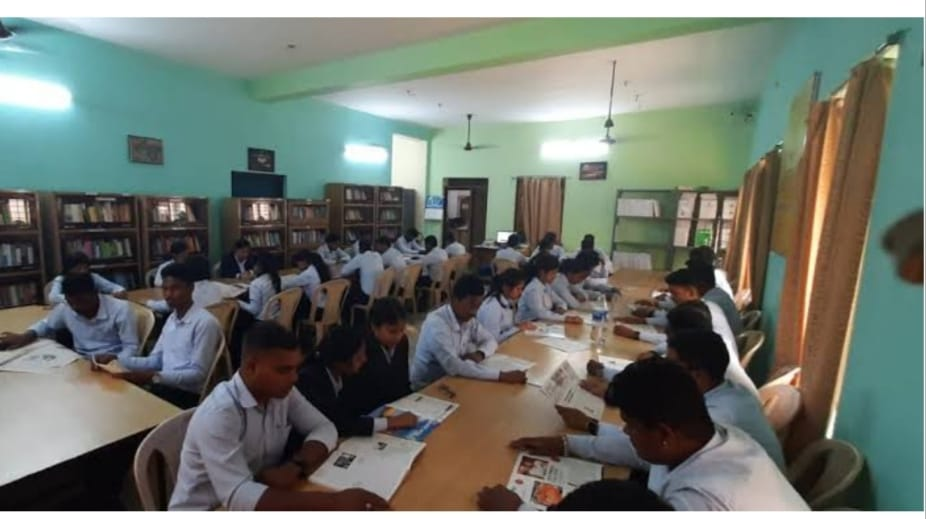
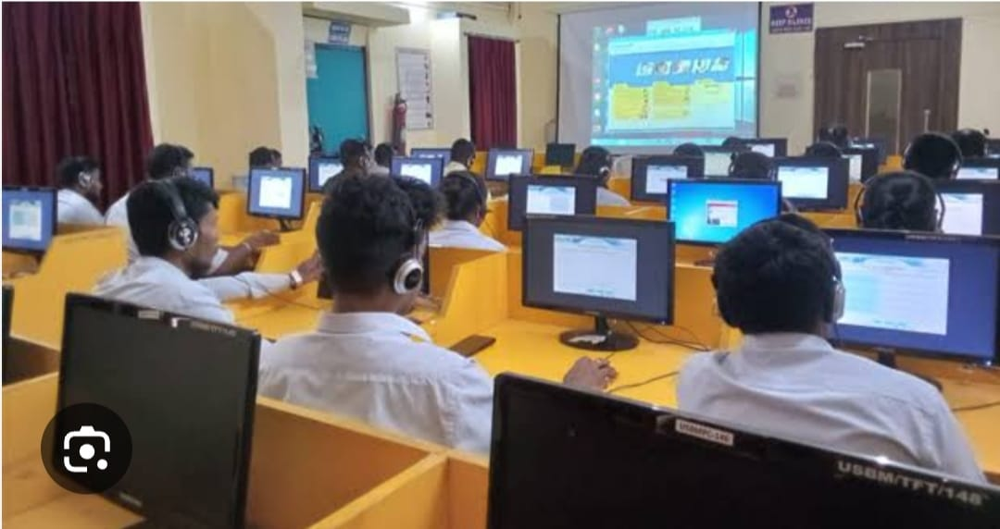
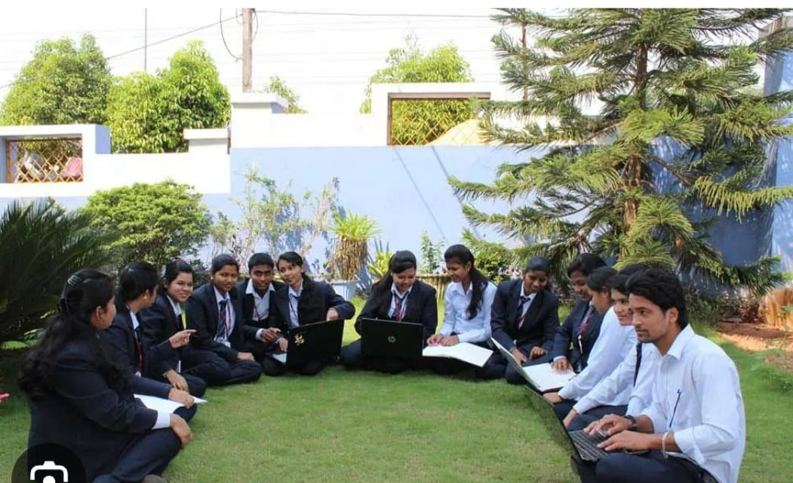
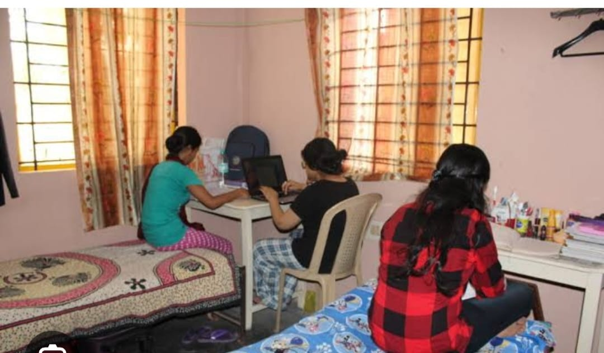
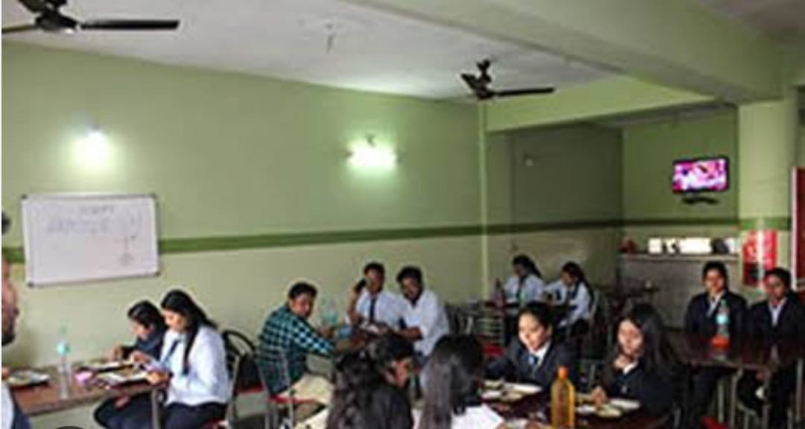
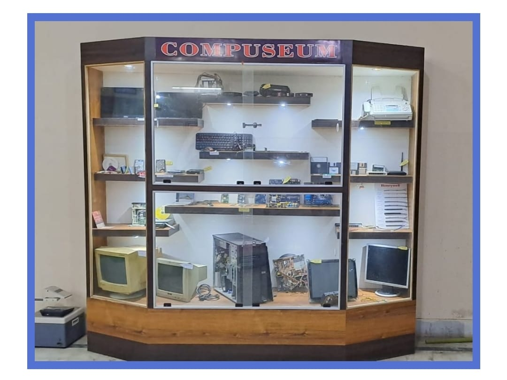
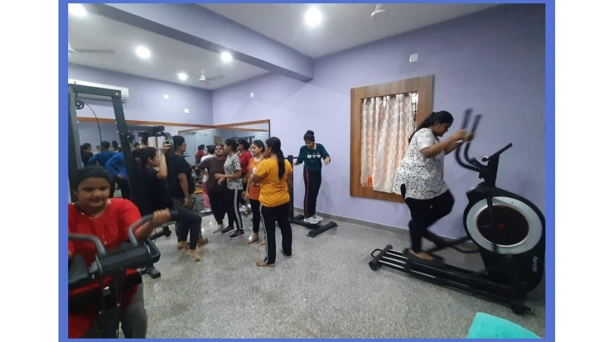

| Library :The library consistently buys the most recent release of scholastic books with the most recent substance on forthcoming new hypotheses for the understudies. It is exceptional with a sufficient number of books, diaries, and magazines. The library gives admittance to 20 National and International diaries, 11 papers in English and vernacular language, and 15 magazines. Understudies can get a sufficient number of books for their examination. E-library: The E-library helps the understudies access a great many books to choose the substance they wish to experience. Numerous digital books and e-diaries are made accessible to the understudies for their needs. |  |
| Language lab : The language lab is exceptionally helpful for improving one's correspondence ability. It furnishes understudies with specialized devices to get the best examples of ways to express the language. The electronic gadgets utilized in the research center invigorate the eyes and ears of the student to gain the language rapidly and without any problem. |  |
| Wifi campus : USBM has 10 Wi-Fi passageways:- 4 on school grounds, 4 in Hostel, 1 in Library, and 1 in the language lab, to give uninterrupted, free web admittance to the understudies. |  |
| Hostel : USBM lodging rooms are serenely outfitted and make for a decent home away from home. Young ladies and young men have separate squares and each square has a fixed limit. There is a scope of convenience choices to browse, for understudies' convenience. The bother free convenience gives them the solace of the organization as they subside into their school and course. It likewise gives them occasion to make companions and get to know the grounds and its offices. Inns are completely made sure about and have very much outfitted and exceptional rooms. In this sort of convenience, they approach TV room, relaxation/sports exercises and papers inside the inn premises |  |
| Canteen : The very much kept up the cooled container is accessible inside the grounds and it serves affordable, clean, and solid nourishment for the understudies and employees. The kitchen is all around ventilated and furnished with a present-day and sterile foundation. |  |
| Compuseum: USBM cointains a compuseum which contains different parts of many computers. |  |
| Gymnasium:USBM has a GYM for the girl's hostel students to give them opportunity to have a perfect body and for physical fitness. |  |